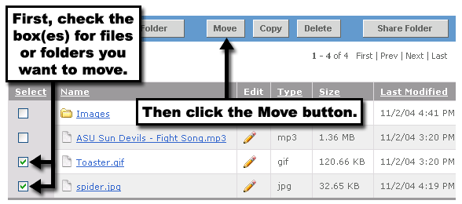
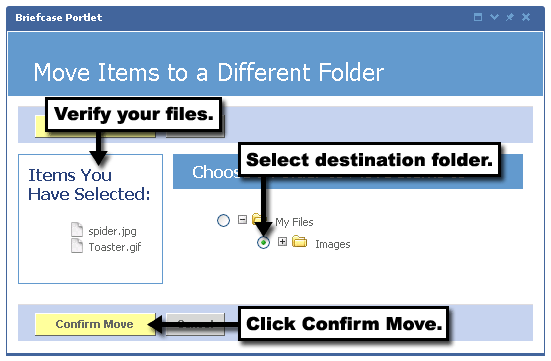

You can move folders or files easily within the Briefcase Portlet. To do so, simply locate the folder or file you'd like to move, and follow these steps:

3. Verify that your items are now in the left column in the list of Items You Have Selected.
4. Choose the destination folder where you'd like these items to be moved.
5. Click the Confirm Move button.
You can now navigate to the destination folder specified to see that your items have been moved.
